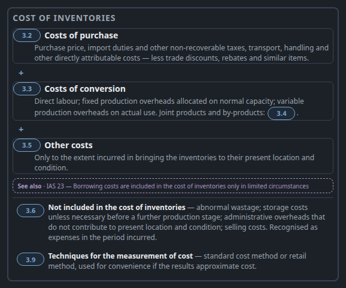
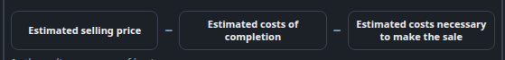
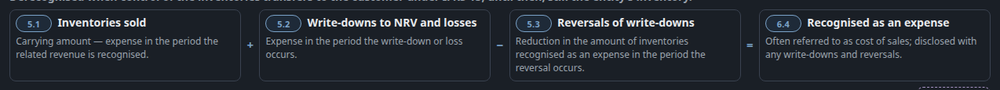

S7 · Formula: one row recipe, one ledger recipe
Rule 6. The IAS 2 master alone uses three term recipes and three operator classes for one job.
Before · live todayIAS 2 master .m-sum — vertical, + at left

Before · live todayIAS 2 master .m-formula — a.m-term, 11 px, no chip

Before · live todayIAS 2 master .m-eqn — chip + title + body, 12 px

After · proposalK9 ledger + K8 formula rows, same cell recipe
K9 Ledger — Cost of inventories (compute → result last, like IAS 16 ch04 .vledger)
K8 Formula row — Measure NRV (define → result first)
K8 Formula row — Inventories sold … (compute → result last); same cell recipe as the NRV row
Titles, chips and operators are the live ones; bodies are left off for size and stay unchanged on the map. “Net realisable value” is the live arm head (4.1) above .m-formula. One term recipe (Cell + T2 title + chip), one operator class.